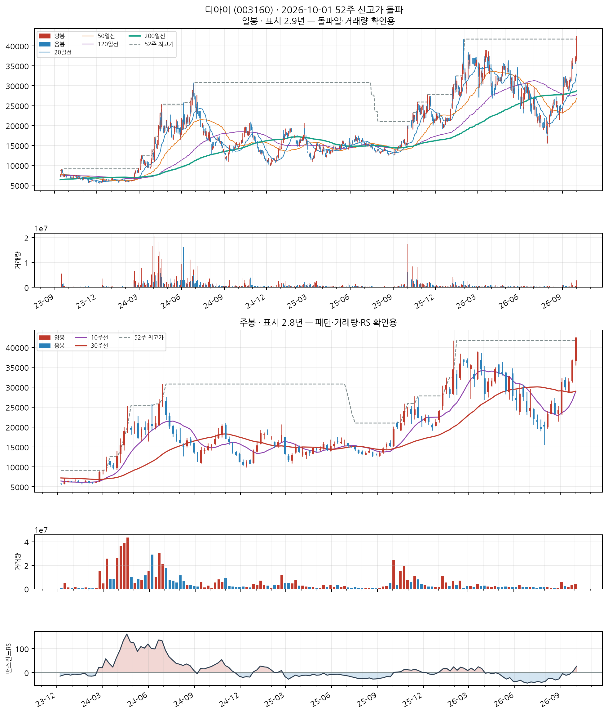
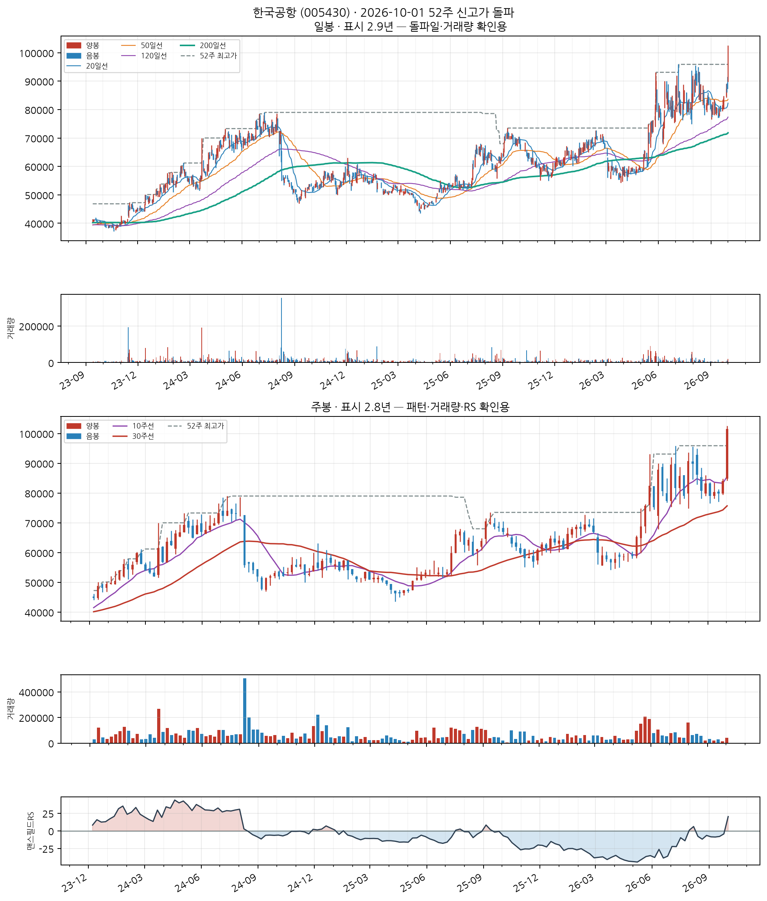
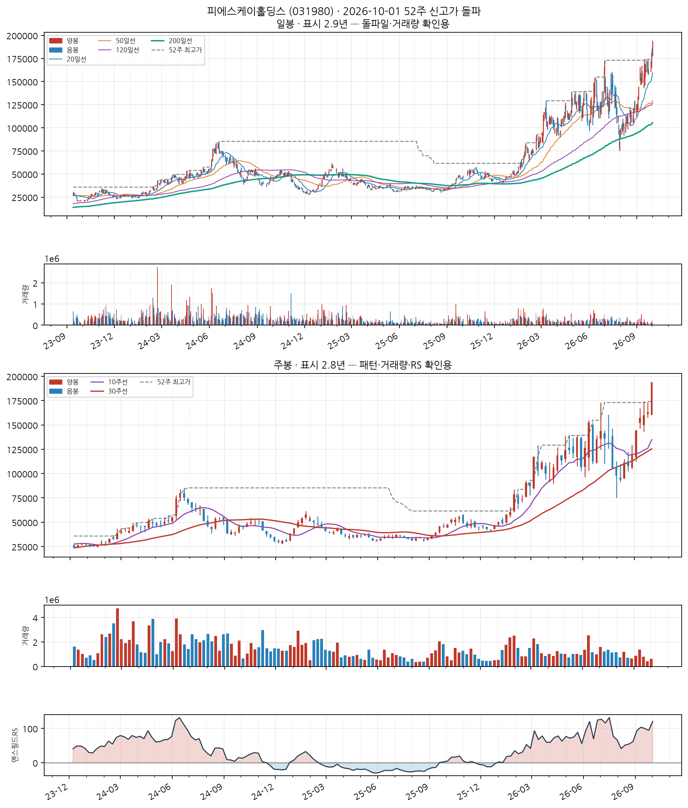
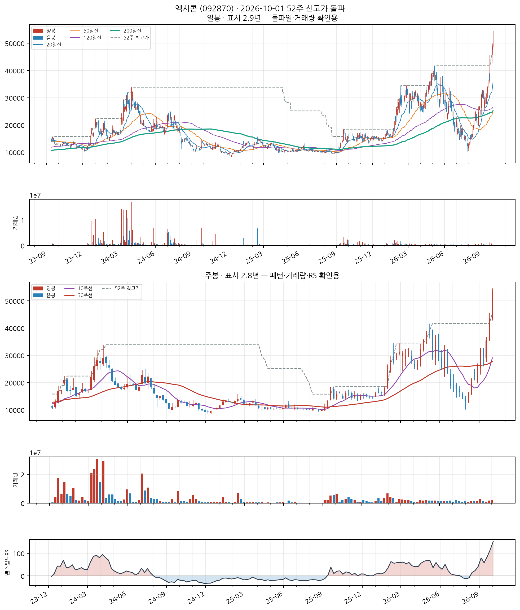
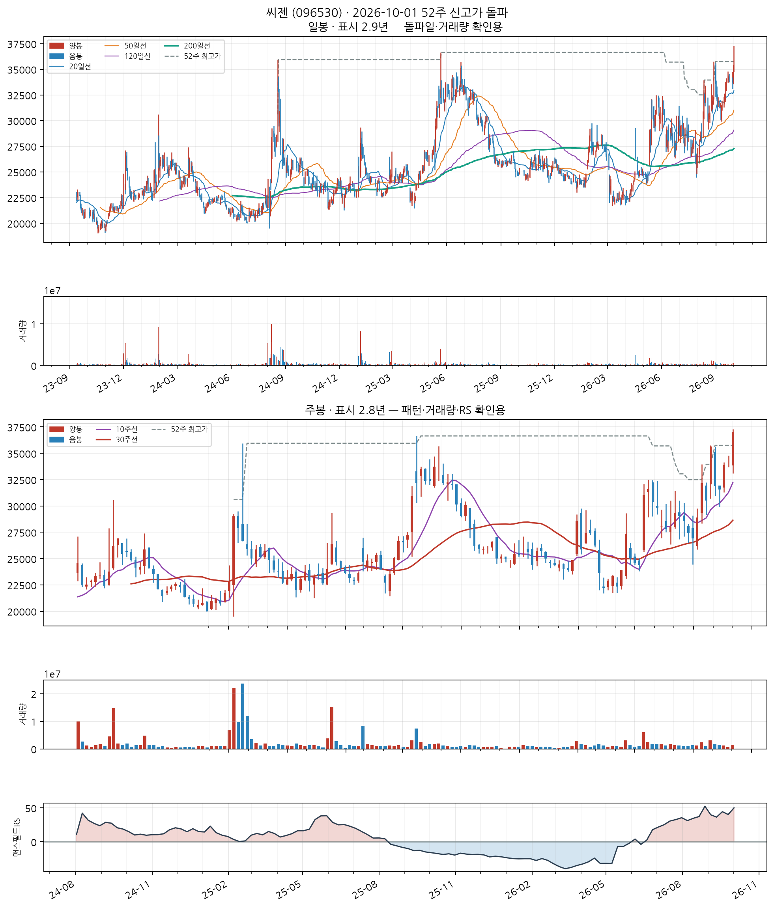
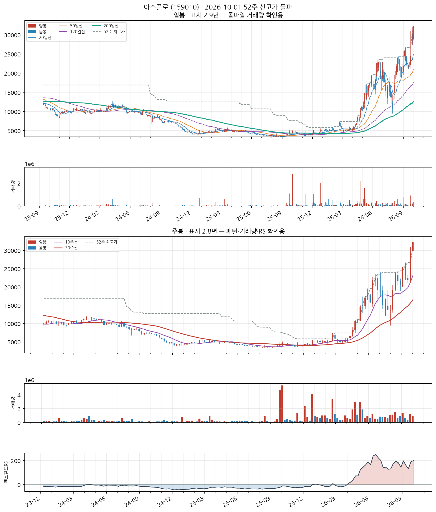

이 전략의 진입 조건
- 52주 신고가 근접·돌파 — 종가가 최근 252거래일(≈1년) 최고가의 '근접 허용폭' 이내일 것 (기본 설정은 하한 0% = 신고가 이상)
- 장기 추세 확인 — 종가가 200일 이동평균 위에 있고, 그 이동평균 자체도 상승 중일 것 (이미 꺾인 종목의 일시 반등을 걸러냅니다)
- 과열 하드컷 — 최근 5거래일 상승률이 40% 이상이면 제외 (급등 직후 고점을 잡는 것을 막습니다)
자세히 — 한계와 주의사항
George & Hwang(2004) <The 52-Week High and Momentum Investing>의 앵커링 이론에 근거합니다 — 투자자가 52주 최고가를 심리적 기준가로 삼아 그 근처에서 매수를 주저하는 편향이 풀리며 추가 상승이 이어진다는 것입니다.
의도적으로 '신선도'는 조건에 넣지 않았습니다. 이미 오래 상승 중인 리더주도 계속 포착하는 것이 이 스캐너의 목적입니다(신선도에 집중하는 쪽은 Launch Pad).
⚠️ 이 전략은 11년 검증에서 코스피를 이기지 못했습니다. CAGR 7.19% · MDD −85.6% (코스피 매수후보유 10.77% · −43.9%). reports/vs_kospi.md의 결론은 "쓸 수 있는 우위가 없다"입니다. 그럼에도 발행하는 것은 신호 자체를 참고 자료로 쓰기 위해서지, 성과가 검증돼서가 아닙니다.
예전 설명에 나오던 +261.22% 같은 수치는 당일 종가 매수를 가정한 값이라 실현 불가능합니다(종가는 장 마감에 확정됩니다). 지금 백테스트는 신호 다음 거래일 시가로 체결합니다.
측정, 시험, 항해, 제어 및 기타 정밀기기 제조업; 광학기기 제외
업종 참고: RS 평균 58/99(업종 중 상위 22%) · 오늘 신호 2건 · 업종 평균이 코스닥 대비 +41.9%p(126일), 종목별 편차 ±65%p
🧪 자체 섹터 분류(실험적, 참고용): 특수 목적용 기계 제조업 (엑시콘·하나마이크론 등 8종목)
섹터 내 RS 순위: 4/8위 (RS 91/99)
섹터 1~3위: 엑시콘(96), 하나마이크론(94), 에이팩트(93)
※ 자체 상관관계 계산(최근 1년) — 검증 시 기준업종 11개 중 8개 정확. 주 단위로 구성종목이 일부 바뀔 수 있음(주간 일치도 실측 0.53)
종가 42,500 · 거래대금 1,199억
고점대비 +1.9%6개월 +23.2%갱신 1회거래량비 4.0x
손절 39,525 | 목표 51,425 | 수량 235주

📐 차트 패턴 판정: 후보 없음 후보 없음 판정 기준(PDF)
세 패턴 모두 필수 조건을 채운 후보가 없다(가장 가까운 컵위드핸들 후보: 핸들: 핸들 저점 26,750가 컵 중간값 33,525 아래 — 핸들이 아니라 컵 재하락).
가장 강한 반증 컵위드핸들: 핸들: 핸들 저점 26,750가 컵 중간값 33,525 아래 — 핸들이 아니라 컵 재하락; 이중바닥: 두 저점 일치: 저점 차이 30.7% — 같은 지지대로 보기 어려움(10% 초과)
경쟁 후보·더 단순한 설명 더 단순한 설명: 최근 26주 상승 추세 지속(+6.5%) — 베이스 없음
추가로 필요한 데이터 장중 고저 기준 깊이(여기 수치는 주봉 종가 기준) · 이번 주 완결 주봉(2026-10-02 라벨) — 미완결이라 판정에서 제외
패턴만으로 매수 추천이나 목표 달성 확률을 만들지 않습니다. 수치 기준은 잠정치이며 라벨 데이터로 검증되지 않았습니다.
CC — 분기 실적 성장 우수
2026 반기보고서(누적) · 순이익 흑자전환(+nan억원→+318억원) · EPS 흑자전환(+nan원→+871원) · 매출 흑자전환(+nan억원→+1,686억원)
DART 공시 기준 · 분기 단독 전년동기 대비 · 직전 분기보다 성장률이 높아짐(가속)
AA — 연간 실적 성장 우수
2025 사업보고서(연간) · 순이익 +387.8% · EPS +366.7% · 매출 +102.0%
DART 공시 기준 · 연간 전년동기 대비 · 최근 3년 연간 EPS 연속 증가
NN — 신고가·모멘텀 우수
고점대비 +1.9% · 최근 20일 중 1회 갱신 · 6개월 모멘텀 +23.2%
SS — 수급(거래량) 우수
20일 평균 대비 4.02배
유통주식수·순매수 데이터는 미보유 (거래량으로만 근사)
LL — 주도주(상대강도) 우수
RS 등급 91/99 (126거래일 ≈ 6개월 기준 · 유니버스 1000종목 중 백분위) · 지수대비 +25.2%p
상위 시가총액 유니버스 기준 — KRX 전체 대비 백분위 아님 · 오닐의 RS Rating은 52주 기준이지만 여기는 126거래일로, 같은 리포트의 6개월 모멘텀과 기간을 맞춘 값이다(원전과 다름)
II — 기관·외국인 수급 우수
20일 순매수 +11.91% (거래대금 대비) · 최근절반 +14.90% vs 이전절반 +7.92% (개선) · 순매수 14일 · 누적 +638.9억원
**오닐의 I(기관 보유 종목 수의 증가)가 아니라 단기 순매수 흐름**을 쓴 대용값이다 — 보유 기관 수는 국내에 공개 데이터가 없다 · 한국투자증권 공식 API(KIS) 기준 · 기관+외국인 합산, 기타법인 제외로 거래대금은 소폭 과소추정 · 임계값은 아직 실측 검증 전 잠정치 — 수급 이력이 쌓이면 다른 지표와 같은 방식으로 구분력을 측정해 조정 예정
MM — 시장방향 판정불가
지수 데이터 조회 실패 또는 판정 불가
실제 매매에는 미적용 — 표시 전용
기타 운송관련 서비스업
업종 참고: RS 평균 데이터 부족 · 오늘 신호 1건
🧪 자체 섹터 분류(실험적, 참고용): 한국공항·에스에이엠티 등 14종목 (업종 혼재)
섹터 내 RS 순위: 1/14위 (RS 95/99)
섹터 1~3위: 한국공항(95), 에스에이엠티(93), 비엠티(88)
※ 자체 상관관계 계산(최근 1년) — 검증 시 기준업종 11개 중 8개 정확. 주 단위로 구성종목이 일부 바뀔 수 있음(주간 일치도 실측 0.53)
종가 101,500 · 거래대금 19억
고점대비 +5.8%6개월 +79.0%갱신 1회거래량비 3.5x
손절 94,395 | 목표 122,815 | 수량 98주

📐 차트 패턴: 약한 유사 — 이중바닥 실패 확신 낮음 판정 기준(PDF)
중간 고점 87,900를 넘었다가 종가가 다시 그 아래로 내려왔다(돌파 실패).
가장 강한 반증 선행 추세: 선행 추세가 상승(+17.6%) — 상승 중 눌림일 수 있어 반전형 전제가 없다
경쟁 후보·더 단순한 설명 더 단순한 설명: 선행 하락이 없어 반전형이 아니라 상승 추세 중 눌림(조정)일 수 있다
측정표 (주봉 종가 기준, 판정일 2026-10-01 이후 데이터 미사용)
조건별 판정
- 미충족 선행 추세 — 선행 추세가 상승(+17.6%) — 상승 중 눌림일 수 있어 반전형 전제가 없다
- 충족 두 저점 일치 — 저점 차이 4.8% ≤ 6%
- 충족 중간 반등 — 중간 반등 16.9% ≥ 8%
- 충족 기간 — 베이스 32주 ≥ 7주
- 충족 깊이 — 베이스 깊이 -8.4% ≤ 40%
- 충족 저점2 매도 약화 — 저점2 부근 거래량 = 저점1 부근의 0.67배
- 충족 최근성 — 돌파 주(2026-07-31)가 8주 전
- 충족 넥라인 돌파 — 2026-07-31 주 종가 90,700 > 확인선 — 돌파 후 8주 경과
- 미충족 돌파 유지 — 돌파 뒤 종가가 확인선 아래로 되돌아옴(현재 -4.3%)
- 충족 돌파 거래량 — 돌파 주 거래량 = 직전 10주 평균의 1.72배
추가로 필요한 데이터 장중 고저 기준 깊이(여기 수치는 주봉 종가 기준) · 이번 주 완결 주봉(2026-10-02 라벨) — 미완결이라 판정에서 제외
패턴만으로 매수 추천이나 목표 달성 확률을 만들지 않습니다. 수치 기준은 잠정치이며 라벨 데이터로 검증되지 않았습니다.
CC — 분기 실적 성장 양호
2026 반기보고서(누적) · 순이익 흑자전환(+nan억원→+103억원) · EPS 흑자전환(+nan원→+3,379원) · 매출 흑자전환(+nan억원→+29억원)
DART 공시 기준 · 분기 단독 전년동기 대비 · 직전 분기보다 성장률이 낮아짐(감속) — 오닐 C 기준으로 한 단계 낮춤
AA — 연간 실적 성장 미흡
2025 사업보고서(연간) · 순이익 -0.1% · EPS -0.2% · 매출 +5.9%
DART 공시 기준 · 연간 전년동기 대비 · 최근 3년 연속 증가는 아님 — 오닐 A 기준 미충족으로 한 단계 낮춤
NN — 신고가·모멘텀 우수
고점대비 +5.8% · 최근 20일 중 1회 갱신 · 6개월 모멘텀 +79.0%
SS — 수급(거래량) 우수
20일 평균 대비 3.51배
유통주식수·순매수 데이터는 미보유 (거래량으로만 근사)
LL — 주도주(상대강도) 우수
RS 등급 95/99 (126거래일 ≈ 6개월 기준 · 유니버스 1000종목 중 백분위) · 지수대비 +60.1%p
상위 시가총액 유니버스 기준 — KRX 전체 대비 백분위 아님 · 오닐의 RS Rating은 52주 기준이지만 여기는 126거래일로, 같은 리포트의 6개월 모멘텀과 기간을 맞춘 값이다(원전과 다름)
II — 기관·외국인 수급 우수
20일 순매수 +14.59% (거래대금 대비) · 최근절반 +26.23% vs 이전절반 -0.04% (개선) · 순매수 12일 · 누적 +15.0억원
**오닐의 I(기관 보유 종목 수의 증가)가 아니라 단기 순매수 흐름**을 쓴 대용값이다 — 보유 기관 수는 국내에 공개 데이터가 없다 · 한국투자증권 공식 API(KIS) 기준 · 기관+외국인 합산, 기타법인 제외로 거래대금은 소폭 과소추정 · 임계값은 아직 실측 검증 전 잠정치 — 수급 이력이 쌓이면 다른 지표와 같은 방식으로 구분력을 측정해 조정 예정
MM — 시장방향 판정불가
지수 데이터 조회 실패 또는 판정 불가
실제 매매에는 미적용 — 표시 전용
피에스케이홀딩스 (031980)
신규
KOSDAQ
특수 목적용 기계 제조업
업종 참고: RS 평균 62/99(업종 중 상위 13%) · 오늘 신호 6건 · 업종 평균이 코스닥 대비 +42.1%p(126일), 종목별 편차 ±67%p
🧪 자체 섹터 분류(실험적, 참고용): 특수 목적용 기계 제조업 (테스·피에스케이홀딩스 등 14종목)
섹터 내 RS 순위: 2/14위 (RS 96/99)
섹터 1~3위: 테스(98), 피에스케이홀딩스(96), 피에스케이(96)
※ 자체 상관관계 계산(최근 1년) — 검증 시 기준업종 11개 중 8개 정확. 주 단위로 구성종목이 일부 바뀔 수 있음(주간 일치도 실측 0.53)
종가 194,000 · 거래대금 420억
고점대비 +4.3%6개월 +94.6%갱신 2회거래량비 1.2x
손절 180,420 | 목표 234,740 | 수량 51주

📐 차트 패턴 판정: 후보 없음 후보 없음 판정 기준(PDF)
세 패턴 모두 필수 조건을 채운 후보가 없다(가장 가까운 컵위드핸들 후보: U자 모양: 바닥 형태(3주 중앙값 평활): 직선 V 템플릿 오차 0.124 vs 포물선 U 템플릿 오차 0.181 → 치우침 -0.056 (V=−0.167·U=+0.167, 기각 ≤-0.05·충족 ≥+0.05) · 바닥 중심 위치 50% — 바닥에서 완만해지는 구간 없이 한 점에서 꺾이는 V자).
가장 강한 반증 컵위드핸들: U자 모양: 바닥 형태(3주 중앙값 평활): 직선 V 템플릿 오차 0.124 vs 포물선 U 템플릿 오차 0.181 → 치우침 -0.056 (V=−0.167·U=+0.167, 기각 ≤-0.05·충족 ≥+0.05) · 바닥 중심 위치 50% — 바닥에서 완만해지는 구간 없이 한 점에서 꺾이는 V자; 이중바닥: 두 저점 일치: 저점 차이 11.8% — 같은 지지대로 보기 어려움(10% 초과)
경쟁 후보·더 단순한 설명 더 단순한 설명: 최근 26주 상승 추세 지속(+63.7%) — 베이스 없음
추가로 필요한 데이터 장중 고저 기준 깊이(여기 수치는 주봉 종가 기준) · 이번 주 완결 주봉(2026-10-02 라벨) — 미완결이라 판정에서 제외
패턴만으로 매수 추천이나 목표 달성 확률을 만들지 않습니다. 수치 기준은 잠정치이며 라벨 데이터로 검증되지 않았습니다.
CC — 분기 실적 성장 우수
2026 반기보고서(누적) · 순이익 흑자전환(+nan억원→+244억원) · EPS 흑자전환(+nan원→+1,131원) · 매출 흑자전환(+nan억원→+473억원)
DART 공시 기준 · 분기 단독 전년동기 대비 · 직전 분기보다 성장률이 높아짐(가속)
AA — 연간 실적 성장 미흡
2025 사업보고서(연간) · 순이익 -4.3% · EPS -4.3% · 매출 -3.6%
DART 공시 기준 · 연간 전년동기 대비 · 최근 3년 연속 증가는 아님 — 오닐 A 기준 미충족으로 한 단계 낮춤
NN — 신고가·모멘텀 우수
고점대비 +4.3% · 최근 20일 중 2회 갱신 · 6개월 모멘텀 +94.6%
SS — 수급(거래량) 양호
20일 평균 대비 1.17배
유통주식수·순매수 데이터는 미보유 (거래량으로만 근사)
LL — 주도주(상대강도) 우수
RS 등급 96/99 (126거래일 ≈ 6개월 기준 · 유니버스 1000종목 중 백분위) · 지수대비 +120.6%p
상위 시가총액 유니버스 기준 — KRX 전체 대비 백분위 아님 · 오닐의 RS Rating은 52주 기준이지만 여기는 126거래일로, 같은 리포트의 6개월 모멘텀과 기간을 맞춘 값이다(원전과 다름)
II — 기관·외국인 수급 양호
20일 순매수 +5.24% (거래대금 대비) · 최근절반 -0.19% vs 이전절반 +8.81% (약화) · 순매수 13일 · 누적 +315.7억원
**오닐의 I(기관 보유 종목 수의 증가)가 아니라 단기 순매수 흐름**을 쓴 대용값이다 — 보유 기관 수는 국내에 공개 데이터가 없다 · 한국투자증권 공식 API(KIS) 기준 · 기관+외국인 합산, 기타법인 제외로 거래대금은 소폭 과소추정 · 임계값은 아직 실측 검증 전 잠정치 — 수급 이력이 쌓이면 다른 지표와 같은 방식으로 구분력을 측정해 조정 예정 · 최근 유입이 이전보다 약해져 한 단계 낮춤
MM — 시장방향 판정불가
지수 데이터 조회 실패 또는 판정 불가
실제 매매에는 미적용 — 표시 전용
정보없음
🧪 자체 섹터 분류(실험적, 참고용): 저스템·제주반도체 등 12종목 (업종 혼재)
섹터 내 RS 순위: 5/12위 (RS 95/99)
섹터 1~3위: 저스템(99), 제주반도체(97), 뉴파워프라즈마(97)
※ 자체 상관관계 계산(최근 1년) — 검증 시 기준업종 11개 중 8개 정확. 주 단위로 구성종목이 일부 바뀔 수 있음(주간 일치도 실측 0.53)
종가 10,620 · 거래대금 48억
고점대비 +2.0%6개월 +73.8%갱신 2회거래량비 1.5x
손절 9,877 | 목표 12,850 | 수량 941주
📐 차트 패턴 판정: 후보 없음 후보 없음 판정 기준(PDF)
세 패턴 모두 필수 조건을 채운 후보가 없다(가장 가까운 컵위드핸들 후보: 구조 독립성: 부모 컵(오른쪽 림 2026-06-12)의 핸들 하락(저점 2026-07-31)을 새 컵의 왼쪽 절반으로 재분할한 후보 — 자체 핸들이 아직 없다, 독립된 새 구조의 증거가 없다).
가장 강한 반증 컵위드핸들: 구조 독립성: 부모 컵(오른쪽 림 2026-06-12)의 핸들 하락(저점 2026-07-31)을 새 컵의 왼쪽 절반으로 재분할한 후보 — 자체 핸들이 아직 없다, 독립된 새 구조의 증거가 없다; 이중바닥: 두 저점 일치: 저점 차이 16.9% — 같은 지지대로 보기 어려움(10% 초과)
경쟁 후보·더 단순한 설명 더 단순한 설명: 최근 26주 상승 추세 지속(+49.8%) — 베이스 없음
추가로 필요한 데이터 장중 고저 기준 깊이(여기 수치는 주봉 종가 기준) · 이번 주 완결 주봉(2026-10-02 라벨) — 미완결이라 판정에서 제외
패턴만으로 매수 추천이나 목표 달성 확률을 만들지 않습니다. 수치 기준은 잠정치이며 라벨 데이터로 검증되지 않았습니다.
CC — 분기 실적 성장 우수
2026 반기보고서(누적) · 순이익 흑자전환(+nan억원→+129억원) · EPS 흑자전환(+nan원→+606원) · 매출 흑자전환(+nan억원→+2,163억원)
DART 공시 기준 · 분기 단독 전년동기 대비 · 직전 분기보다 성장률이 높아짐(가속)
AA — 연간 실적 성장 보통
2025 사업보고서(연간) · 순이익 +290.0% · EPS +318.8% · 매출 +2.8%
DART 공시 기준 · 연간 전년동기 대비 · 최근 3년 연속 증가는 아님 — 오닐 A 기준 미충족으로 한 단계 낮춤
NN — 신고가·모멘텀 우수
고점대비 +2.0% · 최근 20일 중 2회 갱신 · 6개월 모멘텀 +73.8%
SS — 수급(거래량) 우수
20일 평균 대비 1.53배
유통주식수·순매수 데이터는 미보유 (거래량으로만 근사)
LL — 주도주(상대강도) 우수
RS 등급 95/99 (126거래일 ≈ 6개월 기준 · 유니버스 1000종목 중 백분위) · 지수대비 +57.7%p
상위 시가총액 유니버스 기준 — KRX 전체 대비 백분위 아님 · 오닐의 RS Rating은 52주 기준이지만 여기는 126거래일로, 같은 리포트의 6개월 모멘텀과 기간을 맞춘 값이다(원전과 다름)
II — 기관·외국인 수급 우수
20일 순매수 +17.32% (거래대금 대비) · 최근절반 +18.27% vs 이전절반 +13.26% (개선) · 순매수 15일 · 누적 +93.6억원
**오닐의 I(기관 보유 종목 수의 증가)가 아니라 단기 순매수 흐름**을 쓴 대용값이다 — 보유 기관 수는 국내에 공개 데이터가 없다 · 한국투자증권 공식 API(KIS) 기준 · 기관+외국인 합산, 기타법인 제외로 거래대금은 소폭 과소추정 · 임계값은 아직 실측 검증 전 잠정치 — 수급 이력이 쌓이면 다른 지표와 같은 방식으로 구분력을 측정해 조정 예정
MM — 시장방향 판정불가
지수 데이터 조회 실패 또는 판정 불가
실제 매매에는 미적용 — 표시 전용
특수 목적용 기계 제조업
업종 참고: RS 평균 62/99(업종 중 상위 13%) · 오늘 신호 6건 · 업종 평균이 코스닥 대비 +42.1%p(126일), 종목별 편차 ±67%p
🧪 자체 섹터 분류(실험적, 참고용): 특수 목적용 기계 제조업 (엑시콘·하나마이크론 등 8종목)
섹터 내 RS 순위: 1/8위 (RS 96/99)
섹터 1~3위: 엑시콘(96), 하나마이크론(94), 에이팩트(93)
※ 자체 상관관계 계산(최근 1년) — 검증 시 기준업종 11개 중 8개 정확. 주 단위로 구성종목이 일부 바뀔 수 있음(주간 일치도 실측 0.53)
종가 53,200 · 거래대금 362억
고점대비 +6.6%6개월 +88.7%갱신 4회거래량비 1.7x
손절 49,476 | 목표 64,372 | 수량 187주

📐 차트 패턴: 약한 유사 — 이중바닥 돌파 확인 확신 낮음 판정 기준(PDF)
두 저점(25,750/25,250) 뒤 중간 고점 37,550를 종가로 넘었다.
가장 강한 반증 선행 추세: 선행 추세가 상승(+70.8%) — 상승 중 눌림일 수 있어 반전형 전제가 없다
경쟁 후보·더 단순한 설명 더 단순한 설명: 선행 하락이 없어 반전형이 아니라 상승 추세 중 눌림(조정)일 수 있다
측정표 (주봉 종가 기준, 판정일 2026-10-01 이후 데이터 미사용)
조건별 판정
- 미충족 선행 추세 — 선행 추세가 상승(+70.8%) — 상승 중 눌림일 수 있어 반전형 전제가 없다
- 충족 두 저점 일치 — 저점 차이 1.9% ≤ 6% · 두 번째 저점이 첫 저점을 언더컷(IBD 선호)
- 부분충족 중간 반등 — 중간 반등 48.7% — 30%를 넘어 W가 아니라 독립된 두 파동일 수 있음
- 충족 기간 — 베이스 27주 ≥ 7주
- 충족 깊이 — 베이스 깊이 19.2% ≤ 40%
- 부분충족 저점2 매도 약화 — 저점2 부근 거래량 = 저점1 부근의 1.33배
- 충족 최근성 — 돌파 주(2026-09-23)가 0주 전
- 충족 넥라인 돌파 — 2026-09-23 주 종가 43,300 > 확인선
- 부분충족 돌파 거래량 — 돌파 주 거래량 = 직전 10주 평균의 1.31배 (기준 1.4배)
추가로 필요한 데이터 장중 고저 기준 깊이(여기 수치는 주봉 종가 기준) · 이번 주 완결 주봉(2026-10-02 라벨) — 미완결이라 판정에서 제외
패턴만으로 매수 추천이나 목표 달성 확률을 만들지 않습니다. 수치 기준은 잠정치이며 라벨 데이터로 검증되지 않았습니다.
CC — 분기 실적 성장 우수
2026 반기보고서(누적) · 순이익 흑자전환(+nan억원→+76억원) · EPS 흑자전환(+nan원→+586원)
DART 공시 기준 · 분기 단독 전년동기 대비 · 직전 분기보다 성장률이 높아짐(가속)
AA — 연간 실적 성장 양호
2025 사업보고서(연간) · 순이익 흑자전환(-14억원→+90억원) · EPS 흑자전환(-120원→+715원)
DART 공시 기준 · 연간 전년동기 대비 · 최근 3년 연속 증가는 아님 — 오닐 A 기준 미충족으로 한 단계 낮춤
NN — 신고가·모멘텀 우수
고점대비 +6.6% · 최근 20일 중 4회 갱신 · 6개월 모멘텀 +88.7%
SS — 수급(거래량) 우수
20일 평균 대비 1.67배
유통주식수·순매수 데이터는 미보유 (거래량으로만 근사)
LL — 주도주(상대강도) 우수
RS 등급 96/99 (126거래일 ≈ 6개월 기준 · 유니버스 1000종목 중 백분위) · 지수대비 +126.9%p
상위 시가총액 유니버스 기준 — KRX 전체 대비 백분위 아님 · 오닐의 RS Rating은 52주 기준이지만 여기는 126거래일로, 같은 리포트의 6개월 모멘텀과 기간을 맞춘 값이다(원전과 다름)
II — 기관·외국인 수급 우수
20일 순매수 +10.72% (거래대금 대비) · 최근절반 +16.00% vs 이전절반 +0.91% (개선) · 순매수 15일 · 누적 +330.0억원
**오닐의 I(기관 보유 종목 수의 증가)가 아니라 단기 순매수 흐름**을 쓴 대용값이다 — 보유 기관 수는 국내에 공개 데이터가 없다 · 한국투자증권 공식 API(KIS) 기준 · 기관+외국인 합산, 기타법인 제외로 거래대금은 소폭 과소추정 · 임계값은 아직 실측 검증 전 잠정치 — 수급 이력이 쌓이면 다른 지표와 같은 방식으로 구분력을 측정해 조정 예정
MM — 시장방향 판정불가
지수 데이터 조회 실패 또는 판정 불가
실제 매매에는 미적용 — 표시 전용
의료용품 및 기타 의약 관련제품 제조업
업종 참고: RS 평균 44/99(업종 중 상위 69%) · 오늘 신호 1건 · 업종 평균이 코스닥 대비 +4.8%p(126일), 종목별 편차 ±32%p
🧪 자체 섹터 분류(실험적, 참고용): 의약품 제조업 (씨젠·한미사이언스 등 18종목)
섹터 내 RS 순위: 1/18위 (RS 93/99)
섹터 1~3위: 씨젠(93), 한미사이언스(89), 셀트리온(64)
※ 자체 상관관계 계산(최근 1년) — 검증 시 기준업종 11개 중 8개 정확. 주 단위로 구성종목이 일부 바뀔 수 있음(주간 일치도 실측 0.53)
종가 37,050 · 거래대금 192억
고점대비 +3.6%6개월 +58.7%갱신 1회거래량비 1.9x
손절 34,456 | 목표 44,830 | 수량 269주

📐 차트 패턴: 약한 유사 — 이중바닥 돌파 확인 확신 낮음 판정 기준(PDF)
두 저점(24,400/26,900) 뒤 중간 고점 31,600를 종가로 넘었다.
가장 강한 반증 선행 추세: 선행 추세가 상승(+11.6%) — 상승 중 눌림일 수 있어 반전형 전제가 없다
경쟁 후보·더 단순한 설명 더 단순한 설명: 선행 하락이 없어 반전형이 아니라 상승 추세 중 눌림(조정)일 수 있다
측정표 (주봉 종가 기준, 판정일 2026-10-01 이후 데이터 미사용)
조건별 판정
- 미충족 선행 추세 — 선행 추세가 상승(+11.6%) — 상승 중 눌림일 수 있어 반전형 전제가 없다
- 부분충족 두 저점 일치 — 저점 차이 9.3% — 6% 초과
- 충족 중간 반등 — 중간 반등 29.5% ≥ 8%
- 충족 기간 — 베이스 23주 ≥ 7주
- 충족 깊이 — 베이스 깊이 10.8% ≤ 40%
- 충족 저점2 매도 약화 — 저점2 부근 거래량 = 저점1 부근의 0.46배
- 충족 최근성 — 돌파 주(2026-08-14)가 6주 전
- 충족 넥라인 돌파 — 2026-08-14 주 종가 32,150 > 확인선 — 돌파 후 6주 경과
- 충족 돌파 거래량 — 돌파 주 거래량 = 직전 10주 평균의 1.77배
추가로 필요한 데이터 장중 고저 기준 깊이(여기 수치는 주봉 종가 기준) · 이번 주 완결 주봉(2026-10-02 라벨) — 미완결이라 판정에서 제외
패턴만으로 매수 추천이나 목표 달성 확률을 만들지 않습니다. 수치 기준은 잠정치이며 라벨 데이터로 검증되지 않았습니다.
CC — 분기 실적 성장 우수
2026 반기보고서(누적) · 순이익 흑자전환(+nan억원→+260억원) · 매출 흑자전환(+nan억원→+1,360억원)
DART 공시 기준 · 분기 단독 전년동기 대비 · 직전 분기보다 성장률이 높아짐(가속) · EPS 데이터가 없어 순이익·매출로만 판정 — 자사주 매입 착시를 거르지 못함
AA — 연간 실적 성장 보통
2025 사업보고서(연간) · 순이익 흑자전환(-87억원→+484억원) · 매출 +14.5%
DART 공시 기준 · 연간 전년동기 대비 · 최근 3년 연속 증가는 아님 — 오닐 A 기준 미충족으로 한 단계 낮춤 · EPS 데이터가 없어 순이익·매출로만 판정 — 자사주 매입 착시를 거르지 못함
NN — 신고가·모멘텀 우수
고점대비 +3.6% · 최근 20일 중 1회 갱신 · 6개월 모멘텀 +58.7%
SS — 수급(거래량) 우수
20일 평균 대비 1.92배
유통주식수·순매수 데이터는 미보유 (거래량으로만 근사)
LL — 주도주(상대강도) 우수
RS 등급 93/99 (126거래일 ≈ 6개월 기준 · 유니버스 1000종목 중 백분위) · 지수대비 +84.0%p
상위 시가총액 유니버스 기준 — KRX 전체 대비 백분위 아님 · 오닐의 RS Rating은 52주 기준이지만 여기는 126거래일로, 같은 리포트의 6개월 모멘텀과 기간을 맞춘 값이다(원전과 다름)
II — 기관·외국인 수급 우수
20일 순매수 +12.72% (거래대금 대비) · 최근절반 +24.02% vs 이전절반 +0.21% (개선) · 순매수 15일 · 누적 +233.7억원
**오닐의 I(기관 보유 종목 수의 증가)가 아니라 단기 순매수 흐름**을 쓴 대용값이다 — 보유 기관 수는 국내에 공개 데이터가 없다 · 한국투자증권 공식 API(KIS) 기준 · 기관+외국인 합산, 기타법인 제외로 거래대금은 소폭 과소추정 · 임계값은 아직 실측 검증 전 잠정치 — 수급 이력이 쌓이면 다른 지표와 같은 방식으로 구분력을 측정해 조정 예정
MM — 시장방향 판정불가
지수 데이터 조회 실패 또는 판정 불가
실제 매매에는 미적용 — 표시 전용
아스플로 (159010)
8일전 포착
KOSDAQ
일반 목적용 기계 제조업
업종 참고: RS 평균 43/99(업종 중 상위 71%) · 오늘 신호 1건 · 업종 평균이 코스닥 대비 +30.5%p(126일), 종목별 편차 ±113%p
🧪 자체 섹터 분류(실험적, 참고용): 피델릭스·주성엔지니어링 등 26종목 (업종 혼재)
섹터 내 RS 순위: 3/26위 (RS 99/99)
섹터 1~3위: 피델릭스(99), 주성엔지니어링(99), 아스플로(99)
※ 자체 상관관계 계산(최근 1년) — 검증 시 기준업종 11개 중 8개 정확. 주 단위로 구성종목이 일부 바뀔 수 있음(주간 일치도 실측 0.53)
종가 32,250 · 거래대금 124억
고점대비 +0.3%6개월 +517.8%갱신 2회거래량비 1.9x
손절 29,992 | 목표 39,022 | 수량 310주

📐 차트 패턴: 약한 유사 — 컵위드핸들 돌파 확인 확신 낮음 판정 기준(PDF)
컵(11주·깊이 45.9%)+핸들(2주) 뒤 피벗 25,400를 종가로 넘었다.
가장 강한 반증 깊이: 컵 깊이 45.9% — 기준 12%~33% 밖(고변동 종목이라 50%까지 예외 허용)
경쟁 후보·더 단순한 설명 더 단순한 설명: 깊이 조건이 약해 단순 횡보·박스로 볼 여지가 있다(컵 깊이 45.9% — 기준 12%~33% 밖(고변동 종목이라 50%까지 예외 허용))
측정표 (주봉 종가 기준, 판정일 2026-10-01 이후 데이터 미사용)
조건별 판정
- 충족 선행 추세 — 선행 상승 +431.0% ≥ +20%
- 충족 기간 — 컵 11주 (기준 7~65주)
- 부분충족 깊이 — 컵 깊이 45.9% — 기준 12%~33% 밖(고변동 종목이라 50%까지 예외 허용)
- 부분충족 림 대칭 — 좌우 림 차이 12.2% — 12% 초과
- 부분충족 U자 모양 — 바닥 형태(3주 중앙값 평활): 직선 V 템플릿 오차 0.176 vs 포물선 U 템플릿 오차 0.150 → 치우침 +0.025 (V=−0.167·U=+0.167, 기각 ≤-0.05·충족 ≥+0.05) · 바닥 중심 위치 50% — V와 U 사이 — 둥근 바닥의 증거가 약함
- 충족 베이스 거래량 수축 — 컵 구간 평균 = 직전 11주 평균의 0.63배
- 충족 핸들 — 핸들 2주·깊이 13.6% (기준 ≤15%, 컵 깊이의 절반 이하)
- 충족 핸들 거래량 수축 — 핸들 평균 = 컵 구간 평균의 0.91배
- 충족 최근성 — 돌파 주(2026-09-23)가 0주 전
- 충족 피벗 돌파 — 2026-09-23 주 종가 29,400 > 확인선
- 부분충족 돌파 거래량 — 돌파 주 거래량 = 직전 10주 평균의 1.36배 (기준 1.4배)
추가로 필요한 데이터 장중 고저 기준 깊이(여기 수치는 주봉 종가 기준) · 이번 주 완결 주봉(2026-10-02 라벨) — 미완결이라 판정에서 제외
패턴만으로 매수 추천이나 목표 달성 확률을 만들지 않습니다. 수치 기준은 잠정치이며 라벨 데이터로 검증되지 않았습니다.
CC — 분기 실적 성장 우수
2026 반기보고서(누적) · 순이익 흑자전환(+nan억원→+88억원) · EPS 흑자전환(+nan원→+661원)
DART 공시 기준 · 분기 단독 전년동기 대비 · 직전 분기보다 성장률이 높아짐(가속)
AA — 연간 실적 성장 미흡
2025 사업보고서(연간) · 순이익 적자확대(-24억원→-99억원) · EPS 적자확대(-182원→-769원)
DART 공시 기준 · 연간 전년동기 대비 · 최근 3년 연속 증가는 아님 — 오닐 A 기준 미충족으로 한 단계 낮춤
NN — 신고가·모멘텀 우수
고점대비 +0.3% · 최근 20일 중 2회 갱신 · 6개월 모멘텀 +517.8%
SS — 수급(거래량) 우수
20일 평균 대비 1.90배
유통주식수·순매수 데이터는 미보유 (거래량으로만 근사)
LL — 주도주(상대강도) 우수
RS 등급 99/99 (126거래일 ≈ 6개월 기준 · 유니버스 1000종목 중 백분위) · 지수대비 +478.3%p
상위 시가총액 유니버스 기준 — KRX 전체 대비 백분위 아님 · 오닐의 RS Rating은 52주 기준이지만 여기는 126거래일로, 같은 리포트의 6개월 모멘텀과 기간을 맞춘 값이다(원전과 다름)
II — 기관·외국인 수급 우수
20일 순매수 +3.09% (거래대금 대비) · 최근절반 +6.44% vs 이전절반 -1.38% (개선) · 순매수 7일 · 누적 +35.4억원
**오닐의 I(기관 보유 종목 수의 증가)가 아니라 단기 순매수 흐름**을 쓴 대용값이다 — 보유 기관 수는 국내에 공개 데이터가 없다 · 한국투자증권 공식 API(KIS) 기준 · 기관+외국인 합산, 기타법인 제외로 거래대금은 소폭 과소추정 · 임계값은 아직 실측 검증 전 잠정치 — 수급 이력이 쌓이면 다른 지표와 같은 방식으로 구분력을 측정해 조정 예정
MM — 시장방향 판정불가
지수 데이터 조회 실패 또는 판정 불가
실제 매매에는 미적용 — 표시 전용